Extra-binomial variation approach for analysis of pooled DNA sequencing data >>>>>>> 4770c2fa2cc3fbe020c130e94b4d1692ec8ad491
- <<<<<<< HEAD Marco Pagni 1 ======= Xin Yang >>>>>>> 4770c2fa2cc3fbe020c130e94b4d1692ec8ad491 ,
- <<<<<<< HEAD Hélène Niculita-Hirzel 2 ======= John A. Todd >>>>>>> 4770c2fa2cc3fbe020c130e94b4d1692ec8ad491 ,
- <<<<<<< HEAD Loïc Pellissier 3 ,
- Anne Dubuis 3 ,
- Ioannis Xenarios 1 ,
- Antoine Guisan 3 ,
- Ian R. Sanders 3 ,
- Jérôme Goudet 3 and
- Nicolas Guex 1 , ======= David Clayton and
- Chris Wallace >>>>>>> 4770c2fa2cc3fbe020c130e94b4d1692ec8ad491 *
- <<<<<<< HEAD 1 Vital-IT Group, SIB Swiss Institute of Bioinformatics, 1015 Lausanne, Switzerland, 2 Occupational Environment Department, Institute for Work and Health, Universities of Lausanne and Geneva, 1066 Lausanne, Switzerland and 3 Department of Ecology and Evolution, University of Lausanne, 1015 Lausanne, Switzerland ======= Juvenile Diabetes Research Foundation/Wellcome Trust Diabetes and Inflammation Laboratory, Department of Medical Genetics, Cambridge Institute for Medical Research, University of Cambridge, Wellcome Trust/MRC Building, Addenbrooke’s Hospital, Cambridge CB2 0XY, UK >>>>>>> 4770c2fa2cc3fbe020c130e94b4d1692ec8ad491
- ↵ *To whom correspondence should be addressed.
-
<<<<<<< HEAD
- Received November 30, 2012.
- Revision received March 25, 2013.
- Accepted March 26, 2013. =======
- Received November 16, 2011.
- Revision received August 3, 2012.
- Accepted September 5, 2012. >>>>>>> 4770c2fa2cc3fbe020c130e94b4d1692ec8ad491
<<<<<<< HEAD
=======
�
>>>>>>> 4770c2fa2cc3fbe020c130e94b4d1692ec8ad491
Next Section
Abstract
Motivation: Analysis of millions of pyro-sequences is currently playing a crucial role in the advance of environmental microbiology. Taxonomy-independent, i.e. unsupervised, clustering of these sequences is essential for the definition of Operational Taxonomic Units. For this application, reproducibility and robustness should be the most sought after qualities, but have thus far largely been overlooked.
Results: More than 1 million hyper-variable internal transcribed spacer 1 (ITS1) sequences of fungal origin have been analyzed. The ITS1 sequences were first properly extracted from 454 reads using generalized profiles. Then, otupipe, cd-hit-454, ESPRIT-Tree and DBC454, a new algorithm presented here, were used to analyze the sequences. A numerical assay was developed to measure the reproducibility and robustness of these algorithms. DBC454 was the most robust, closely followed by ESPRIT-Tree. DBC454 features density-based hierarchical clustering, which complements the other methods by providing insights into the structure of the data.
Availability: An executable is freely available for non-commercial users at ftp://ftp.vital-it.ch/tools/dbc454 . It is designed to run under MPI on a cluster of 64-bit Linux machines running Red Hat 4.x, or on a multi-core OSX system.
Contact: dbc454{at}vital-it.ch or nicolas.guex{at}isb-sib.ch
=======Abstract
Motivation : The invention of next-generation sequencing technology has made it possible to study the rare variants that are more likely to pinpoint causal disease genes. To make such experiments financially viable, DNA samples from several subjects are often pooled before sequencing. This induces large between-pool variation which, together with other sources of experimental error, creates over-dispersed data. Statistical analysis of pooled sequencing data needs to appropriately model this additional variance to avoid inflating the false-positive rate.
Results : We propose a new statistical method based on an extra-binomial model to address the over-dispersion and apply it to pooled case-control data. We demonstrate that our model provides a better fit to the data than either a standard binomial model or a traditional extra-binomial model proposed by Williams and can analyse both rare and common variants with lower or more variable pool depths compared to the other methods.
Availability : Package ‘extraBinomial’ is on http://cran.r-project.org/
Contact : chris.wallace{at}cimr.cam.ac.uk
Supplementary information: Supplementary data are available at Bioinformatics Online.
>>>>>>> 4770c2fa2cc3fbe020c130e94b4d1692ec8ad491
<<<<<<< HEAD
1 INTRODUCTION
Environmental microbiology has advanced greatly in the past few years with the advent of next-generation sequencing technologies. A microbial community can now be sampled by the exhaustive sequencing of the PCR products obtained from a carefully chosen pair of primers. Currently, the Roche 454 pyro-sequencing is the favored technology because it produces relatively long and sufficiently numerous reads at an acceptable cost. However, pyro-sequences suffer from a non-negligible rate of error ( Huse et al. , 2007 ), which often affects the sequence regions in which a given nucleotide is repeated several times.
In this study, we have used a dataset of the fungal internal transcribed spacer 1 (ITS1) coming from soil samples obtained from 198 different locations in the western Swiss Alps. Each location represented a 4 m 2 of grassland. The locations were selected by following a random-stratified design and, thus, are distributed over a great variety of soil types and altitudes. Overall, more than a million pyro-sequences have been obtained, with the aim of identifying how biotic and abiotic factors influence the fungal diversity at different scales. Ecological results of this study will be reported elsewhere, the focus of this article being to introduce a novel classification method capable of robustly analyzing this large-scale dataset.
There are currently three taxonomy-independent, i.e. unsupervised, clustering algorithms that can determine Operational Taxonomic
Units (OTUs) on a large scale, say in the range of a million of pyro-sequences. These algorithms are cd-hit-454 (
Niu
et al.
, 2010
), otupipe (
Edgar, 2010
;
Edgar
=======
To date, numerous common genetic variants associated with common disease [e.g. Type 1 diabetes (T1D)] have been successfully
discovered by genome-wide association studies (
Barrett
et al.
, 2009
;
Cooper
et al.
, 2008
;
Smyth
et al.
, 2006
;
Wellcome Trust Case Control Consortium, 2007
). However, linkage disequilibrium (LD) means these results may only be used to identify an associated region, which usually
encompasses several genes. To pinpoint the exact causal genes, under the assumption that there may be multiple variants of
common and low frequency which alter disease risk, attention has turned to low-frequency variants that are unlikely to be
in LD with other variants. Associated low-frequency variants are considered more likely to be causal. For example, several
independent rare risk variants with implied functional roles were recently associated with inflammatory bowel disease using
next-generation sequencing of pooled samples (
Rivas
>>>>>>> 4770c2fa2cc3fbe020c130e94b4d1692ec8ad491
et al.
, 2011
<<<<<<< HEAD
) and ESPRIT-Tree (
Cai and Sun, 2011
). They have been recently reviewed and numerically benchmarked (
Sun
et al.
, 2012
) in an article that constitutes an excellent introduction to the field of taxonomy-independent microbial community analysis
and that summarizes what is the state of art in the field.
Here, we introduce DBC454, a density-based hierarchical clustering algorithm that departs on several points from the previously
mentioned ones. It was designed with the following requirements in mind: it should (i) determine the optimal number of clusters,
(ii) properly separate arbitrarily shaped distributions, (iii) not be affected by the order in which the data are presented,
(iv) be robust and resistant to noise (e.g. not assign outliers to clusters), (v) use intuitive-free parameters, (vi) be capable
of clustering millions of observations in thousands of clusters and (vii) return a solution in a reasonable amount of time.
We also introduce a new numerical benchmark for unsupervised clustering algorithms, which measures their robustness with respect
to the errors that are likely to affect the input sequences.
1 INTRODUCTION
2 METHODS
2.1 Source material
Fungal ITS1 sequences were obtained from 198 soil samples gathered from 4 m 2 plots in grasslands along wide soil and altitudinal gradients in the western Swiss Alps ( Dubuis et al. , 2012 ). From each plot, five subsamples of 250 mg soil samples were taken, from which DNA was extracted and used for fungi barcoding using the Roche Genome Sequencer FLX Titanium 454 System. The technical details of this experiment will be described in another paper. In total, 1 649 376 reads were generated, of which 1 152 121 were full-length ITS1 sequences (see below).
2.2 Extraction of full-length fungal ITS1
Two generalized profiles of a length of ∼50 residues were built with the PFTOOLS v2.3 package ( Luthy et al. , 1994 ; Sigrist et al. , 2002 ) ( http://web.expasy.org/pftools ) to recognize the highly conserved regions that flank the ITS1 regions, located at the end of the 18S rRNA and at the beginning of the 5.8S rRNA, respectively ( Fig. 1 ). These profiles were manually edited to produce global matches on the profile side and local matches on the sequence side. In addition, because of the early termination of many pyro-sequences in the 18S region, the profile scoring system at the corresponding extremity (left of profile 1 on Fig. 1 ) was modified to permit the termination of the alignment at the end of the sequence while within the profile. As far as we know, the generalized profile as implemented in the PFTOOLS v2.3 package remains the only sequence alignment method that permits such a degree of detail in the design of an alignment scoring system for DNA sequences. The two profiles were calibrated on shuffled 454 reads to determine the most appropriate score thresholds ( Pagni and Jongeneel, 2001 ). The pyro-sequences were searched independently with both profiles, and when both were matching on a sequence, the ITS1 was defined as the intervening sequence between them. With this strategy, 1 152 121 full-length ITS1 were recovered, among which 341 585 were unique, out of the 1 649 376 raw pyro-sequences.

View larger version:
- In this window
-
In a new window
=======
), a design similar to that of
Nejentsev
et al.
(2009)
who undertook the first such study and whose data we re-examine here.
Nejentsev et al. (2009) re-sequenced 144 target regions covering exons and splice sites of 10 T1D candidate genes that were previously found to be associated with T1D or related diseases. The study used 454 sequencing of 20 pools of DNA from 480 patients and 480 healthy controls (48 samples per pool). Four rare variants, single-nucleotide polymorphisms (SNPs) located in the interferon induced with helicase C domain 1 ( IFIH1 ) and the C-type lectin domain family 16, member A ( CLEC16A ) genes, displayed different frequencies in cases and controls according to Fisher’s exact test, and evidence for association of two of these variants within the gene IFIH1 was replicated in independent samples. This directly implicates IFIH1 as causal in T1D.
A major concern with this study is that huge variation exists between pool depths and the variation is especially large for rare SNPs ( Fig. 1 ). The variation is derived from both the pooling and the sequencing, and this is not accounted for by Fisher’s exact test which assumes a binomial variance within pools and neglects between-pool variation.
<<<<<<< HEAD View larger version:
View larger version:- In this window
- In a new window >>>>>>> 4770c2fa2cc3fbe020c130e94b4d1692ec8ad491
- <<<<<<< HEAD Download as PowerPoint Slide ======= Download as PowerPoint Slide >>>>>>> 4770c2fa2cc3fbe020c130e94b4d1692ec8ad491
<<<<<<< HEAD Fig. 1.Extraction of ITS1 full-length sequences from the raw 454 reads. Two generalized profiles were built in the two highly conserved regions flanking the ITS1
======= Fig. 1.Variance analysis of the SNPs detected in Nejentsev et al. ’s article. ( a ) Variance–mean depth comparison. Variance of depth increases with mean depths. ( b ) Variance of depth can be extreme, particularly for low minor allele frequency
>>>>>>> 4770c2fa2cc3fbe020c130e94b4d1692ec8ad491The same profile-based search strategy was applied on the FUN, PLN, ENV and INV sections of the release 109 of the EMBL: both strands were searched and 127 577 intervening sequences with a length from 1 to 500 nt were retained as ITS1 to constitute a reference dataset. The biological conclusions drawn with the latter sequences will be discussed in the companion paper.
The only drawback of this profile-based extraction is that it rejects the ITS1 that do not have enough of the 18S region sequenced, i.e. <20 nt. Hence, the longer ITS1 are likely to be under-sampled, given the observed distribution of the lengths of the raw 454 reads (not shown). In contrast, this eliminates the difficulties linked to the analysis of incomplete sequences, which is especially relevant here, as one will only use algorithms that rely explicitly or implicitly on global sequence alignments .
2.3 Computer programs and parameters
The DBC454 algorithm is presented in Section 3. DBC454 was run using default parameter values (23 steps, using starting and ending distances of 3.317 and 7.141, respectively). We also tested five alternate starting distance levels (3.464, 3.606, 3.873, 4.000 and 4.243). The resulting partitions of the data are named dbc-s0 for the default parameters and dbc-s1 to dbc-s6 for the alternate starting levels.
cd-hit-454 v4.5.4 was run using default parameters, but different values were tested for the sequence identity threshold: 98, 97, 95 and 90%. The resulting partitions of the input data are designated as cdh-98, cdh-97, cdh-95 and cdh-90, respectively.
otupipe v9, with usearch v5.1.221, was run using default parameters, and with different values (98, 97, 95 and 90%) for PCTID_ERR, PCTID_OTU and PCTID_BIN parameters. The resulting partitions of the input data are designated as otu-98, otu-97, otu-95 and otu-90, respectively.
ESPRIT-Tree 11152011 was obtained from the author Yjun Sun and run using default parameters, which produces a hierarchical clustering with 15 levels. By cutting this hierarchy at different heights, one can obtain 15 different partitions of the data. These are named etr-00 to etr-14 (from lower to higher levels).
The sequences of every cluster were aligned using mafft ( Katoh and Standley, 2013 ), and the cluster ‘radius’ was computed as the average of the percent divergences of every sequence pairs in the cluster.
Perl and R scripts were extensively and creatively used throughout this study to re-format, glue together and analyze all the data.
2.4 Robustness benchmark
Artificially mutated versions of the ITS1 dataset were created using the msbar program from the EMBOSS suite ( Rice et al. , 2000 ). To simulate the errors that occur during the 454 sequencing, we followed the quantitative analysis of Huse et al. (2007) . Briefly, 18% of the original sequences were randomly selected, and among them, 61% were given a single error, 17% two errors and 22% three errors. The types of errors introduced were insertions, deletions or substitutions in 46, 33 and 21% of the cases, respectively. We repeated this procedure five times, to obtain five distinct versions of the mutated dataset.
Two different partitions of the same dataset (e.g. from two different algorithms), or the partitions of two related datasets (e.g. original versus mutated with the same algorithm), were compared by computing the adjusted Rand index (ARI; Hubert and Arabie, 1985 ) with the R package ‘clues’.
2.5 Accuracy benchmark
For every algorithm, the 1 152 121 ITS1 were clustered together with the 127 577 reference ITS1 previously extracted from the EMBL. The taxa of EMBL entries at the species, genus and family ranks were assigned whenever possible using the NCBI taxonomy. Reference sequences corresponding to environmental samples and uncultured organisms were clustered, but not used to assess the accuracy.
3 RESULTS
3.1 The DBC454 algorithm
3.1.1 The choice of a metric
The DBC454 algorithm requires that every sequence be represented as a point in an
n
-dimensional space with integer coordinates. Then, the algorithm relies on the computation of the Euclidian distance between
two points
X
and
Y
, defined by

Although sequences are often believed to ‘live in some pseudo-metric space’ ( Cai and Sun, 2011 ), there is no generally accepted manner to encode a sequence as a point in an n -dimensional space. Regarding our specific problem with fungal ITS1, which are nucleotide sequences with a length between ∼50 and 300 nt, a relatively simple encoding was investigated and proved a posteriori to be successful.
The simplest encoding is certainly to count the numbers of A, C, G and T of a sequence and to represent it as a point in a four-dimensional space. Obviously, this is a poor encoding, as it is likely that two distinct sequences of the same length can share the same nucleotide composition. However, this principle of encoding can be improved by increasing the number of dimensions, for example, by counting the number of adjacent dinucleotides, which encode a sequence as a point in a 16-dimensional space. The encoding used by DBC454 goes one step further, also counting all the dinucleotide separated by one or two residues. Thus, every sequence is encoded as a point in a 48-dimensional space. For example, the dinucleotide counts for the sequence ATAATA are AT = 2, TA = 2, AA = 1; the counts for dinucleotide separated by one nucleotide are A?A = 2, T?A = 1, A?T = 1; counts for those separated by two nucleotides are A??A = 2, T??T = 1; and all the other counts are zero. In theory, this encoding strategy does not exclude that two unrelated sequences of the same length can share exactly the same encoding. However, we have never observed such a case while working with real data. In contrast, the DBC454 encoding has also some interesting properties, particularly regarding the comparison of pyro-sequences, which are especially prone to insertion/deletion errors that affect repeated stretches of a given nucleotide. The examples given in Table 1 illustrate that the metric featured by DBC454 is, for example, less sensitive to this type of errors than a metric based on pairwise sequence identity. This is also somehow reminiscent of the flowgram comparison of pyro-sequences that have been used by previous authors ( Quince et al. , 2009 ).
View this table:
Table 1.
Example of distances obtained with the DBC454 metric (see Section 3.1.1) compared with the percent of divergence [100 − percent identity (%ID)], when aligning the wild-type sequence with a sequence in which the GGC (underlined) was replaced with various short sequences
3.1.2 Density-based hierarchical clustering
The DBC454 algorithm depends on two essential parameters: N , the minimal number of points that are required to find a valid cluster; and d , the maximal distance between two points for them to be connected together. For a given distance threshold d , all the points that can be connected together will form a valid cluster if their count reaches, or exceeds, N . Taken together, the N and d parameters implicitly specify the density constraint that is placed on the definition of a valid cluster. However, no constraint is placed on the ‘shape’ of a cluster, in that it can be compact and spherical, doughnut shaped or thread shaped. For DBC454, there is no such thing as a cluster ‘center’ as defined for classical hierarchical clustering algorithms, nor of a cluster seed, as implemented in cd-hit-454 and otupipe. Furthermore, as all distances are evaluated, independent runs of the algorithm on the same dataset provide the exact same partition, independently of the sequence order.
For d = 0, no clusters are returned, unless a unique sequence is present at least N times in the input dataset. For d = ∞, there exists only a single cluster containing all the sequences. A flowchart of the algorithm is presented in Figure 2 . The hierarchical clustering starts by providing DBC454 with a low value for d , which is progressively increased by a user-specified amount up to the greatest distance value desired. As d increases, three observations can be made: (i) new clusters with at least N sequences can be discovered; (ii) existing clusters can grow; and (iii) existing clusters can merge. Eventually, a tree of merge events, i.e. a hierarchical clustering, is obtained, and it is possible to retrace the order (according to d ), in which the clusters have been discovered. Figure 3 presents a typical example of a clustering hierarchy observed in the ITS1 dataset. In addition, it is possible to retrieve the level d at which a sequence first entered the classification. This is a convenient way to distinguish the sequences that are representative of the core of a cluster (i.e. they entered the hierarchy at a low d value), from outlier sequences that entered at a greater d value. When the clustering is stopped at the largest d value, the sequences that have not been attributed to any cluster are considered to be noise.

Fig. 2.
Algorithm flowchart. A: Encoding of the FASTA sequences using dinucleotide counts (see Section 3.1.1 for details). B: Identify new clusters and add sequences to previously identified clusters by single linkage using Euclidian distance cutoff d . C: When any previously identified clusters are merging at the distance cutoff d , record the cluster content before merging, and update the cluster parent–child hierarchy. D: Remove newly identified clusters containing less than N sequences. E: Increase the Euclidian distance cutoff d for the next pass. F: Traverse the cluster parent–child merging tree to re-create each cluster discovered in its last state before its merging with another cluster (identification of seed clusters). G: Re-assign sequences to closest seed clusters (see text for detail)

View larger version:
- In this window
-
In a new window
=======
The Poisson model has also been employed for sequence count data as well as analysis of differential gene expression ( Marioni et al. , 2008 ). With only one parameter, the Poisson distribution assumes the variance of reads is equal to its mean. However, the variance may exceed the mean, requiring an over-dispersed model as in our data. A negative binomial model has been used as an alternative to model the larger variance, for example in testing differential expression for digital gene expression data ( Robinson and Smyth, 2007 ), given it has one more parameter than the Poisson distribution. The addition of this parameter, however, means the negative binomial model requires a large number of replicates to estimate the two parameters properly.
Another fully mathematically specified over-dispersed model is the beta-binomial model, which, applied to variants derived from pooled case-control sequence data, would assume a binomial distribution within pools and that the expected allele frequency of each pool is beta-distributed. Crowder (1978) used this model and calculated maximized log-likelihoods to analyse the effects from seeds and extracts on germination. Other applications of this model include the analysis of false discovery rates (FDRs) in microarray data to model the number of false rejections, yielding a less biased FDR estimator than the empirical estimator following a binomial distribution ( Hunt et al. , 2009 ). The advantage of this approach is obvious: meaningful parameters and a computable likelihood which could be maximized by standard methods to calculate the relating parameters. However, maximizing a beta-binomial likelihood can be computationally difficult.
An alternative is to use a model in which only the first two moments are defined. We propose to use and extend such an extra-binomial model originally described by Williams (1982) . The extra-binomial model still assumes the allele counts obey a binomial distribution within pools and also takes the between-pool variance into consideration. In this article, we compare the performance of statistical tests assuming simple binomial variation, Williams’ extra-binomial variation and our modified extra-binomial model using quantile–quantile (Q–Q) plots. We also extend our study beyond the original minor allele frequency (MAF) range used by Nejentsev et al. (1–3%) to include all observed single-nucleotide variation.
2 METHODS
2.1 Experimental data pre-processing
The experimental data used for the following analysis were drawn from the article by Nejentsev et al. (2009) . The sequencing data were processed using existing software or R ( R Development Core Team, 2010 ) as described below. BWA-SW ( Li and Durbin, 2010 ) was used to align query 454 sequences to the NCBI36 human assembly, yielding sam files which were processed by SAMtools ( Li et al. , 2009 ) to remove duplicate reads. SNPs were identified and counted by VarScan ( Koboldt et al. , 2009 ), filtered by minimum base quality (≥25) and minimum total read depth (≥8).
In the absence of a variant, errors should randomly distribute across multiple pools while for a genuine rare variant excess
reads of the alternative allele are expected to concentrate in one or several pools. Thus, to distinguish the errors from
the true SNPs, we first excluded the common variants with MAF
and then compared the observed pool read distribution for each remaining rare SNP to that expected under a null hypothesis
of random errors only (
Bansal, 2010
). We assumed variants to be true rare SNPs if (i) they were not consistent with a random error model with a significant
P
-value less than
 (Bonferroni correction with a prior significance level equal to 0.05) and (ii) there was at least one pool with more than
two reads for the minor alleles.
(Bonferroni correction with a prior significance level equal to 0.05) and (ii) there was at least one pool with more than
two reads for the minor alleles.
For the binomial model only, SNPs and pools were further filtered by chromosome coverage—only pools with more than 80% probability to cover (include at least one read from) at least 80 out of 96 chromosomes were used. This reduced the variation between different pools by dropping pools with poor PCR or sequencing quality. SNPs were dropped if there were no valid pools for one group (case or control) at a position.
2.2 Statistical models
Our aim is to identify the SNPs that are associated with T1D status. We define an observation as a success if it corresponds
to the major allele, otherwise it is a failure. Let
 and
and
 denote the expected major allele frequency for SNP
i
in control and case chromosomes, respectively. Then our hypothesis is written as
denote the expected major allele frequency for SNP
i
in control and case chromosomes, respectively. Then our hypothesis is written as
 (1)
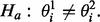
(2)
In the following models, we assume there is no systematic error in the sequencing.
(1)
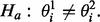
(2)
In the following models, we assume there is no systematic error in the sequencing.
2.2.1 Binomial variation
For significance testing, Nejentsev et al. (2009) assumed a simple binomial model within pools, estimated overall allele frequencies by treating each pool equally and used these estimated allele frequencies to estimate chromosome counts of each allele. Allele counts were compared in case and control groups in a 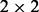 table at each SNP by Fisher’s exact test (see Section A of the Supplementary Material ).
2.2.2 Williams’ extra-binomial variation model (EB1)
We can relax the assumptions above by considering an over-dispersed binomial model. Here, we applied an extra-binomial model
proposed by
Williams (1982)
to our data. With the assumption that the variation within each pool is binomial unchanged, we introduce a continuous variable
 as the allele frequency of SNP
i
in pool
j
to reflect the discrepancy between different pools in allele frequency.
as the allele frequency of SNP
i
in pool
j
to reflect the discrepancy between different pools in allele frequency.
 is independently distributed on (0,1) and its first two moments are defined as
is independently distributed on (0,1) and its first two moments are defined as
 (3)
(3)
 (4)
(4)
As shown below, the variance is over-dispersed when
 . Conditionally, in pool
j
when
. Conditionally, in pool
j
when
 , the number of reads of the major allele
, the number of reads of the major allele
 follow Bin
follow Bin
 where
where
 is the depth of the
j
-th pool at the
i
-th SNP and
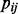
is estimated by
is the depth of the
j
-th pool at the
i
-th SNP and
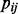
is estimated by
 . Unconditionally, deriving from
Equation (4)
, the variance of
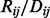
can be written as
. Unconditionally, deriving from
Equation (4)
, the variance of
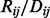
can be written as
 (5)
Thus, the extra-binomial model allows for between-pool variation by scaling the variance by a heterogeneity factor,
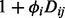
, which increases with read depth. We could choose a specific distribution for
(5)
Thus, the extra-binomial model allows for between-pool variation by scaling the variance by a heterogeneity factor,
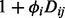
, which increases with read depth. We could choose a specific distribution for
 such as the beta-distribution which could induce
such as the beta-distribution which could induce
 to follow a beta-binomial distribution (
Zhou
et al.
, 2011
). Instead, we adopt a quasi-likelihood approach and follow Williams’ method to yield an estimator of allele frequency,
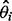
, by first fitting it into a logistic linear model and then maximizing the quasi-likelihood by weighted least square iteration
(see Section B of the
Supplementary Material
). The weighted sum of squares of residuals yields the goodness of fit statistic
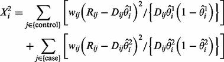
(6)
where the weight
to follow a beta-binomial distribution (
Zhou
et al.
, 2011
). Instead, we adopt a quasi-likelihood approach and follow Williams’ method to yield an estimator of allele frequency,
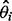
, by first fitting it into a logistic linear model and then maximizing the quasi-likelihood by weighted least square iteration
(see Section B of the
Supplementary Material
). The weighted sum of squares of residuals yields the goodness of fit statistic
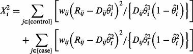
(6)
where the weight
 . To test the significance of
. To test the significance of
 , we tested the increase in
, we tested the increase in
 when deleting the case-control factor as suggested by Williams. This is distributed as a
when deleting the case-control factor as suggested by Williams. This is distributed as a
 variable with one degree of freedom under the null hypothesis of no association.
variable with one degree of freedom under the null hypothesis of no association.
2.2.3 Modified extra-binomial model (EB2)
In Williams’ extra-binomial model, the parameter
 is specific to each SNP, which makes it difficult to estimate
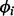
accurately given only 20 data points for each SNP. In contrast, we have many SNPs. We adopted two universal parameters
a
and
b
here instead of
is specific to each SNP, which makes it difficult to estimate
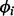
accurately given only 20 data points for each SNP. In contrast, we have many SNPs. We adopted two universal parameters
a
and
b
here instead of
 to scale the variance, such that
to scale the variance, such that
 (7)
where
s
is the number of distinct chromosomes sampled in one pool, namely, 96 in this study. Ideally with no other over-dispersion,
as
(7)
where
s
is the number of distinct chromosomes sampled in one pool, namely, 96 in this study. Ideally with no other over-dispersion,
as
 . However, sequencing errors and additional variation described earlier mean
. However, sequencing errors and additional variation described earlier mean
 . We write
. We write
 (8)
and by comparing
Equation (7)
with a standard binomial variance function, we see that
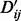
may be interpreted as the adjusted depth of pool
j
for SNP
i
.
(8)
and by comparing
Equation (7)
with a standard binomial variance function, we see that
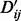
may be interpreted as the adjusted depth of pool
j
for SNP
i
.
Considering the quantities of this model,
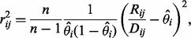
(9)
where
n
is the number of pools, namely, 20 in this study, should have expectation [see
Equation (5)
in the
Supplementary Material
]:
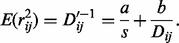
(10)
We therefore estimate the parameters
a
and
b
by linear regression of
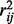
on
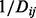
, yielding
 as the intercept and
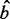
as the slope.
as the intercept and
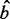
as the slope.
Given the interpretation of
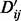
as an adjusted depth, the allele counts in pool
j
were estimated as
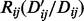
and
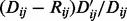
. These were summed over case and control pools to form a
 table on which a
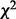
test was performed to test the significance of
table on which a
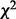
test was performed to test the significance of
 .
.
2.2.4 Accounting for sequencing error
To examine the potential influence of sequencing errors on the models, a base-specific error rate, 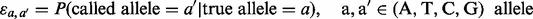 (11) where allele a is the reference allele and allele 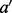 is the alternative allele was estimated by summing allele counts over all positions in our target sequence that were either not called as SNPs by VarScan or failed subsequent filtering.
We used these estimated error rates which were of the order 1–10 errors per 100 000 bases (see Supplementary Table S1 ) to adjust read counts of the major allele and fitted all models to the adjusted read counts 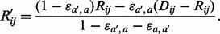 (12)
2.3 Simulation studies
To further evaluate the statistical performance of our models, a series of simulation studies were carried out and both Type
1 error and power under various situations were examined. The sample size was set as 500 cases and 500 controls divided into
20 pools of 50 people. The allele counts of SNP
i
in pool
j
per person were assumed to follow a gamma distribution with shape
 and scale
and scale
 average coverage
average coverage
 (
Sarin
et al.
, 2008
), where the average coverage per person was set at 40×.
(
Sarin
et al.
, 2008
), where the average coverage per person was set at 40×.
We simulated three sets of 700 SNPs in each dataset (i.e. 2100 in total). The first was a set of ‘null’ SNPs, with MAF = 0; the second was a set of ‘neutral’ SNPs, with MAF in controls ranging from very rare (MAF = 0.005) to common (MAF = 0.5) and equal MAF in cases; the third was a set of ‘disease’ SNPs, with MAF in controls again ranging from 0.005 to 0.5 and in cases determined according to the control MAF and assuming a multiplicative genetic with an allele relative risk (rr) set at 1.5. As we specify our model with rr, we do not need to define the population disease rate. However, for a rare disease such as T1D, the rr is approximately equal to the odds ratio. A range of symmetric error rates (the chance of calling the alternative allele in error) from 0 to 5% was considered and applied to simulated data assuming a binomial distribution. We blinded the analysis to which SNPs were truly ‘null’ and applied the same analysis as described above for the 454 data to identify false SNPs. From these we estimated the error rates and corrected the read counts of the remaining SNPs according to Equation (12) .
We performed a total of 1000 simulations in this manner, and Type 1 error rates and power were estimated from the results for the ‘neutral’ and ‘disease’ SNPs, respectively.
3 RESULTS
3.1 Simulation studies
The first two moments of our simulated data were examined, resulting in a mean sequence depth of around 1950 reads per pool and variance of 12 026.
Figure 2 shows estimated Type 1 error rates and power from our simulated data at a significance level 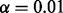 . Overall, the EB2 model maintains good control of Type 1 error, across allele frequencies and error rates although tends to be conservative for rare SNPs (MAF 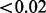 ). On the other hand, under Fisher’s exact test, nominal Type 1 error rates may be exceeded by a factor of nine. Note that Fisher’s test is anti-conservative in this situation, in contrast with the typical behaviour of non-parametric tests. We found the expected conservative behaviour when we simulated under a simple binomial model (data not shown), so the anti-conservative behaviour shown here appears to result from the over-dispersion. We can also see that the Type 1 error rate for Fisher’s but not EB2 is affected by the sequencing error rate. This is likely because our error correction method does a good job of correcting the simple error on average, but at the expense of increasing the noise, which is correctly dealt with by EB2 but not Fisher’s test. Power appears slightly lower for EB2 compared to Fisher’s, but not substantially so, given the difference in Type 1 error rate control. Some differentiation in power can be seen for our EB2 model with changes in sequencing error rates, with higher error rates having slightly lower power. However, the effect of sequencing error, once corrected, seems minimal given the relatively high coverage depth simulated.

View larger version:
- In this window
- In a new window >>>>>>> 4770c2fa2cc3fbe020c130e94b4d1692ec8ad491
- <<<<<<< HEAD Download as PowerPoint Slide ======= Download as PowerPoint Slide >>>>>>> 4770c2fa2cc3fbe020c130e94b4d1692ec8ad491
<<<<<<< HEAD
Fig. 3.
Example of the clustering hierarchy obtained for 5 of the 1199 clusters discovered in the ITS1 dataset. C1–C5: clusters; R1–R6: EMBL reference sequences. For each of the 23 levels, the actual clustering distance used during the computation is indicated at the bottom of the figure. The area of each circle is proportional to the cluster size, ranging from 102 to 2549 sequences. In this example, three clusters are discovered at the lowest level, one at distance 4.359 and one at distance 5.099. The so-called seed clusters are represented in gray. They are the larger clusters found in a branch, just before the first merge event, and play a pivotal role for the post-assignment of the sequences that enter the classification at a higher level
======= Fig. 2.
Type 1 error rate (left) and power (right) for Fisher’s exact test (Fisher) and our proposed EB2 model with the significance
level
 . The allelic relative risk is set at rr = 1.5 for the power calculation. Sequencing error rates vary from 0% to 5%
. The allelic relative risk is set at rr = 1.5 for the power calculation. Sequencing error rates vary from 0% to 5%
<<<<<<< HEAD
3.1.3 Re-assignment to the final partition
The final number of clusters is taken as equal to the number of leaves found in the hierarchical clustering, independently of the level d at which the leaf has appeared. The sequences placed in the leaf clusters account for only a fraction of all the sequences, but represent the core of the classification. The cluster sizes tend to increase while climbing every branch of the tree. The particular clusters found just before their first merging event will be referred to as the seed clusters and are shown in gray in Figure 3 . At the end of the clustering process, the seed clusters are used to attract and re-assign the sequences that entered the clustering hierarchy in a branch above the first merge event. More precisely, this re-assignment is based on the shortest distance between the sequence to re-assign and every sequence already placed in seed clusters.
When all the sequences have been assigned to a cluster, or left in the noise, DBC454 can optionally process a set of reference sequences supplied by the user, and assigns them to the closest cluster at the proper d value. Only reference sequences sufficiently close to an already established cluster are retained, and all the other reference sequences are rejected as noise. Again, the level at which a reference sequence enters the hierarchy is indicative of how close this sequence is to the core of the cluster. When taxonomically curated sequences are used for this optional last step, this allows the annotation of the clusters. By separating the reference sequences (if any) from the main dataset, one ensures that they will not contribute to the cluster discovery and thus alter the results. However, to ease the comparison of the algorithms in the accuracy analysis (see below), this feature was not used (e.g. the whole dataset, including the reference sequences, was clustered all at once).
3.2 Number of clusters and percentage of classified sequences
The goal of this study was to identify how the environmental factors influence the fungal diversity at a large geographic scale from a particularly large number of samples. Thus, within this project, it was essential to consider the dominant species and not the rare ones. In other words, clusters should contain a representative number of members to be worth considering in subsequent ecological analyses. In our example of ITS1 sequences generated from 198 geographically different sites, we decided that this minimum number will be 100 (roughly the half of the number of the geographic plots considered in the project). Note that this number corresponds to <0.01% of the total number of sequences. Thus, for DBC454, the minimal number of sequences to seed a cluster was set to 100 ( N = 100). We have applied the same condition to filter the results of all the other algorithms at the post-processing stage, i.e. all the sequences from clusters smaller than 100 were pooled as noise.
Figure 4 summarizes the number of clusters that was found by each algorithm, as well as the percentage of classified sequences, i.e. not assigned to the noise. DBC454 and ESPRIT-Tree tend to classify more sequences in a smaller number of clusters than cd-hit-454 and Otupipe. For each algorithm, the number of clusters decreases and the number of classified sequences increases when the clustering parameters are relaxed. This effect is the least pronounced with DBC454. An analysis of the average radius of the clusters discovered shows that DBC454 radii are in the range of those obtained with cd-hit-454 and otupipe. ESPRIT-Tree spans a much larger range of cluster radii.
 =======
=======
3.2 Experimental data
After initial filtering, 473 SNPs were selected for analysis. Our estimated error rates were of the order of one error per 100 000 bases (see Supplementary Table S1 ), consistent with previous observations ( Huse et al. , 2007 ), and had a negligible impact on association results; only the results without error correction are shown.
Although we expect many SNPs will be associated with T1D, given their location in established T1D-associated regions, we still
expect them to show only limited departure from the null hypothesis due to the sample size available (even for genuinely associated
SNPs, odds ratios for T1D are in the range 1–2). In contrast, a Q–Q plot of the Fisher’s exact test results (
Fig. 3
a) shows a large slope (slope = 2.481) and observed maximum
 value,
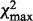
, around 600 suggesting that the simple binomial model does not provide a good fit to the data. Although the slope decreases
to 1.285 and
value,
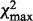
, around 600 suggesting that the simple binomial model does not provide a good fit to the data. Although the slope decreases
to 1.285 and
 to about 150 (
Fig. 3
b) by filtering pools and SNPs to include only those with higher coverage (
n
= 431), this improvement was achieved at the cost of discarding data—only pools and SNPs passing the filters were counted
in the test.
to about 150 (
Fig. 3
b) by filtering pools and SNPs to include only those with higher coverage (
n
= 431), this improvement was achieved at the cost of discarding data—only pools and SNPs passing the filters were counted
in the test.
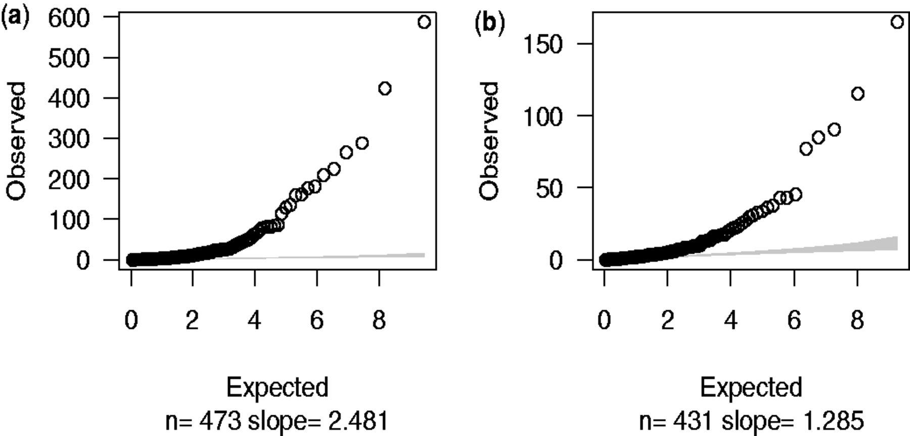
>>>>>>> 4770c2fa2cc3fbe020c130e94b4d1692ec8ad491
View larger version:
<<<<<<< HEAD
Fig. 4.
Number of clusters, percentage of sequences classified and average cluster radius for the various algorithms/parameters tested. Left: number of clusters containing at least 100 sequences. Right: percentage of the 1 152 122 input sequences classified in clusters containing at least 100 sequences. The value for the original ITS1 dataset is shown with a white diamond; boxplots show the values obtained for the five mutated datasets. The average cluster radius for the original ITS1 dataset is shown with white squares on the right plot ======= Fig. 3.
Fisher’s exact test statistics. The observed
 values were calculated by using Fisher’s
P
-value to calculate quantiles of
values were calculated by using Fisher’s
P
-value to calculate quantiles of
 distribution. Expected values were random quantiles in
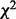
distribution with df = 1. In this and subsequent quantile–quantile plots, the shaded region is the 95% concentration band.
(
a
) 473 SNPs after initial filtering. (
b
) 431 SNPs after further filtering by chromosome coverage
>>>>>>> 4770c2fa2cc3fbe020c130e94b4d1692ec8ad491
distribution. Expected values were random quantiles in
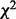
distribution with df = 1. In this and subsequent quantile–quantile plots, the shaded region is the 95% concentration band.
(
a
) 473 SNPs after initial filtering. (
b
) 431 SNPs after further filtering by chromosome coverage
>>>>>>> 4770c2fa2cc3fbe020c130e94b4d1692ec8ad491
3.3 Robustness analysis
In our view, the most important criterion to evaluate a method of clustering metagenomic data is robustness . Ideally, if an experiment is repeated, e.g. if the same samples are re-sequenced, one hopes to retrieve exactly the same cluster structure/OTU definition. In other words, the final partition should be resistant to the errors that actually occur during the sequencing. To measure this quantitatively, we have designed the following numerical benchmark. Five ‘mutated’ datasets were derived from the original dataset, by introducing typical 454 sequencing errors ( Huse et al. , 2007 ). See Section 2 for details. We performed the clustering with each one of the five mutated datasets, and compared the partition obtained with the original one. The measure of robustness was given by the ARI, which equals 1 when two partitions are identical and approaches 0 when the partitions are random with respect to each other.
As explained earlier, we were only interested in clusters containing at least 100 sequences. Thus, before proceeding with the ARI computation, two distinct treatments can be applied to the sequences left in the noise: (i) consider the noise as a single additional cluster; and (ii) reject from the analysis all the sequences that appear in the noise in either one of the two compared partitions. Figure 5 A presents the numerical results obtained while considering the noise as a single additional cluster: DBC454 is clearly the most robust method, but ESPRIT-Tree also achieves a good robustness for some intermediate tree-depth values. Figure 5 B presents the results, while ignoring the sequences that are unclassified (e.g. appear in the noise) in either one of the two compared partitions. The ARI values are, on average, improved, but the global picture of the comparison of different algorithms remains the same. It should be noted that cd-hit-454 and otupipe are especially sensitive to sequencing errors when their default parameters are used.
 =======
=======
Figure 4
shows the Q–Q plot result based on Williams’ extra-binomial model. Despite most observed
 values dropping below 30, the slope remained large (slope = 24.88). Note that because variance of reads is required to estimate
the over-dispersion parameter
values dropping below 30, the slope remained large (slope = 24.88). Note that because variance of reads is required to estimate
the over-dispersion parameter
 , SNPs with total minor allele counts equal to zero in either cases or controls were excluded, leaving 420 SNPs to test.
, SNPs with total minor allele counts equal to zero in either cases or controls were excluded, leaving 420 SNPs to test.
 >>>>>>> 4770c2fa2cc3fbe020c130e94b4d1692ec8ad491
>>>>>>> 4770c2fa2cc3fbe020c130e94b4d1692ec8ad491
View larger version:
<<<<<<< HEAD
Fig. 5.
Robustness analysis. Each box represents the ARIs of five comparisons of the original partition with the partitions obtained with the five artificially mutated datasets, for the various algorithms/parameters, as given in Section 2. Above: all clusters with less than 100 members were attributed to noise, and this was treated as a single additional cluster. Below: sequences appearing in the noise either in the original dataset or in the mutated dataset were not taken into account ======= Fig. 4.
Q–Q plots were drawn by plotting observed
 values against expected quantiles in
values against expected quantiles in
 distribution with df = 1 based on Williams’ extra-binomial model (EB1). The triangles in the charts stand for the SNPs with
extremely large
distribution with df = 1 based on Williams’ extra-binomial model (EB1). The triangles in the charts stand for the SNPs with
extremely large
 values beyond the boundary shown in vertical axis
>>>>>>> 4770c2fa2cc3fbe020c130e94b4d1692ec8ad491
values beyond the boundary shown in vertical axis
>>>>>>> 4770c2fa2cc3fbe020c130e94b4d1692ec8ad491
3.4 Comparison of the different partitions
Figure 6 shows the results of the comparison of the dbc-s0 partition with the partitions obtained with all the other methods. The DBC454 partitions appear insensitive to the starting distance parameter. Regarding ESPRIT-Tree, the partition etr-04 appears remarkably similar to dbc-s0 (ARI = 0.88 and 0.95 when noise is or is not considered, respectively). Noticeably, etr-04 was previously shown to be one of the most robust partitions produced by ESPRIT-Tree ( Fig. 5 ).
 =======
=======
The Q–Q plot in Figure 5 a illustrates that EB2 model suits our data better with slope equal to 1.26, but the maximum sample quantile, although lower than the EB1 model, is still above 100. We recognize that despite filtering and improved models, sequencing data are still noisy and a proportion of SNPs identified may be errors. If we restrict to 270 non-novel SNPs [those in dbSNP version 128 ( Sherry et al. , 2001 )] which are less likely to be errors, all sample quantiles drop below 40 ( Fig. 5 b). The dominance of the EB2 model does not depend on MAF, as can be seen when SNPs are divided according to MAF ( Supplementary Fig. 1 ).
 >>>>>>> 4770c2fa2cc3fbe020c130e94b4d1692ec8ad491
>>>>>>> 4770c2fa2cc3fbe020c130e94b4d1692ec8ad491
View larger version:
<<<<<<< HEAD
Fig. 6.
Comparison of the dbc-s0 partition of the ITS1 dataset with the partitions obtained with various algorithms/parameters as described in Section 2. Black plain circle: considering all sequences. White open circle: ignoring sequences that appear in the noise in either of the two partitions compared ======= Fig. 5.
Q–Q plots of the results using EB2 model. ( a ) 473 SNPs after initial filtering were employed in the test with estimated over-dispersion parameters a = 0.40, b = 13.66. ( b ) 270 db SNPs within our target regions; a = 0.59, b = 1.27 >>>>>>> 4770c2fa2cc3fbe020c130e94b4d1692ec8ad491
We have conducted a detailed investigation into the discrepancies that exist between the dbc-s0 and etr-04 partitions. Multiple sequence alignments of homologous ITS1 were produced and analyzed using phylogenetic trees and multidimensional scaling ( Borg and Groenen, 2005 ). These strongly suggest to us that both algorithms are essentially producing coherent classifications of the sequences, but sometimes they produce clusters with distinct levels of granularity.
3.5 Accuracy analysis
Another round of clustering was performed on an extended dataset consisting of the previously investigated ITS1 sequences plus 127 577 reference ITS1 from the EMBL, for which the taxa at the species, genus and family ranks were obtained from the NCBI taxonomy. It must be noted that most of the reference ITS1 ended up in the noise, i.e. in clusters with less than 100 members, because they were not present in the investigated environmental samples. To evaluate the relative clustering accuracy, we focused on the subset of reference sequences that were always classified by every single method/parameters. This represented a subset of 3365 (62), 3709 (113) and 4022 (1122) sequences (taxa) for family, genus and species, respectively. We used the NCBI taxonomy as the reference partition, and computed the ARI for each partition. Our results ( Fig. 7 ) show that overall, each method behaves similarly, albeit poorly. In particular, the accuracy achieved at the species rank is clearly worse than at the other taxonomic ranks. This might reflect the fact that the ITS1 itself, considering the sequencing errors, is not informative enough to reliably assign the species rank. cdh-98, otu-90 and etr-12 have the best accuracy at the species, genus and family ranks, respectively. However these partitions are not among the most robust, as shown previously. We are aware that such an accuracy analysis is delicate, as it depends both on the investigated dataset and on the quality of the reference taxonomy. This analysis is certainly not devoid of a circularity problem, as part of the reference fungal taxonomy used here was likely established using numerical methods that convey implicit or explicit assumptions on the definition of a fungal taxon.

Fig. 7.
<<<<<<< HEAD
Analysis of the clustering accuracy at the family (white), genus (gray) and species (black) ranks for the various algorithms tested, using the NCBI taxonomy as an external reference =======
Compared with Nejentsev et al. ’s results, the exact values of our Fisher’s P -values were slightly different due to different alignment software and filters used in this article to process data. However, Nejentsev et al. identified four SNPs with Fisher’s P -values < 0.05, consistent with our results (both Fisher’s exact test and EB2 model; Table 1 ).
Table 1.
Comparison of different approaches on the four SNPs identified in Nejentsev et al. ’s article of which the first two SNPs within IFIH1 gene were replicated in their follow-up genotyping experiment
| SNP | Location | Chr. | Alleles | P -value | |||
|---|---|---|---|---|---|---|---|
| Nejentsev’s Fisher’s | Our Fisher’s | Our EB1 | Our EB2 | ||||
| rs35337543 | IFIH1 , intron 8 | chr2 |
G
 C
C
|
0.000044 | 0.0032 | 0.0029 | 0.016 |
| rs35667974 | IFIH1 , exon 14 | chr2 |
A
 G
G
|
0.0049 | 0.076 | 0.017 | 0.011 |
| ss107794688 | CLEC16A , intron 23 | chr16 |
C
 T
T
|
0.016 | 0.045 | 0.0047 | 0.034 |
| ss107794687 | CLEC16A , intron 11 | chr16 |
C
 T
T
|
0.023 | 0.000046 | 0.00021 | 0.000005 |
-
Since different alignment software and filters were used, our Fisher’s exact results were slightly different from Nejentsev et al. rsquo;s. Overall, all the four SNPs still showed significance in our preferred EB2 model (
 ).
).
Table 1.
Comparison of different approaches on the four SNPs identified in Nejentsev et al. ’s article of which the first two SNPs within IFIH1 gene were replicated in their follow-up genotyping experiment
Apart from the SNPs identified by Nejentsev
et al.
previously, there were 85 new SNPs in the EB2 model with
 . After examining the flanking 5′- and 3′-sequences (to see whether there were base repeats that are associated with erroneous
SNP calls), read distribution across all pools and base qualities, seven SNPs listed in
Table 2
were considered most likely to be real.
. After examining the flanking 5′- and 3′-sequences (to see whether there were base repeats that are associated with erroneous
SNP calls), read distribution across all pools and base qualities, seven SNPs listed in
Table 2
were considered most likely to be real.
Table 2.
The SNPs identified by EB2 model after initial filtering
| SNP | Gene | Alleles | MAF | P -value | OR | T1D SNP | r 2 | ||
|---|---|---|---|---|---|---|---|---|---|
| Control | Case | Fisher’s | EB2 | ||||||
| rs3184504 | SH2B3 |
T
 C
C
|
0.53 | 0.41 |

|

|
0.62 | rs3184504 | 1 |
| rs72650660 | CLEC16A |
C
 T
T
|
0.043 | 0.011 |

|

|
0.25 | – | – |
| rs8052325 | CLEC16A |
A
 G
G
|
0.13 | 0.082 |

|

|
0.60 | rs12708716 | 0.26 |
| rs2476601 | PTPN22 |
G
 A
A
|
0.093 | 0.15 |

|

|
1.72 | rs2476601 | 1 |
| rs3827734 | PTPN22 |
A
 T
T
|
0.0025 | 0.020 |

|

|
8.14 | – | – |
| rs1800521 | AIRE |
T
 C
C
|
0.23 | 0.32 |

|

|
1.58 | rs760426 | 0.04 |
| rs11594656 | 0.0029 | ||||||||
| rs28360489 | IL2RA |
C
 T
T
|
0.11 | 0.084 | 0.039 |

|
0.74 | rs2104286 | 0.10 |
| rs12722495 | 0.62 | ||||||||
-
OR is odds ratio of minor allele for T1D. r 2 is the correlation coefficient with the most associated independent T1D SNPs (marker SNPs that have been identified associated with T1D before) in each region ( http://www.t1dbase.org/page/Regions ).
Table 2.
The SNPs identified by EB2 model after initial filtering >>>>>>> 4770c2fa2cc3fbe020c130e94b4d1692ec8ad491
3.6 Computation times
The computational complexity of DBC454 is quadratic with the number of sequences and proportional to the number of levels, in the worst case. The algorithm is fully deterministic and has been parallelized with MPI to run up to 256 CPUs. Actual performance depends on the nature of the dataset. For the dataset reported in this article, all computation times were determined on Intel E5540 Xeon CPU at 2.53 GHz. The computation of the partition of the 1 152 121 input sequences by cd-hit-454 and otupipe both took ∼5 min. The DBC454 computation was executed in parallel on 16 CPUs and took ∼13 min (wall clock time), which actually corresponds to a total of 3.6 h of CPU to generate a hierarchical classification with 23 different levels (i.e. ∼10 min per level). ESPRIT-Tree required ∼9 h of CPU to generate a hierarchical classification with 15 levels.
When considering the mutated dataset, the average computation times increased by 69% (cd-hit-454), 48% (otupipe), 61% (ESPRIT-tree) and 90% (DBC454). This can be explained by the number of unique sequences that are increased in the mutated datasets compared with the original one.
=======
Six of these seven reside in known T1D regions, while rs1800521 (
AIRE
) is in a T1D candidate region. rs3184504 (
SH2B3
) and rs2476601 (
PTPN22
) are known T1D marker SNPs and rs28360489 (
IL2RA
) is in LD with a known T1D marker SNP (rs12722495,
r
2
= 0.62) (
http://www.t1dbase.org/page/Regions
). Two of the remaining four, rs8052325 (
CLEC16A
) and rs1800521 (
AIRE
), are not in tight LD with known T1D SNPs (correlation coefficient
 ), while the final two, rs72650660 (
CLEC16A
) and rs3827734 (
PTPN22
), were not found by 1000 genomes presumably due to the small MAF (
Table 2
), which prevents us from calculating LD.
), while the final two, rs72650660 (
CLEC16A
) and rs3827734 (
PTPN22
), were not found by 1000 genomes presumably due to the small MAF (
Table 2
), which prevents us from calculating LD.
<<<<<<< HEAD
4 DISCUSSION
The use of generalized profiles for defining the hyper-variable ITS1 by its highly conserved flanking regions alleviates most of the sensitivity problems encountered with pattern-based search methods ( Bellemain et al. , 2010 ), including sequencing errors, such as indels. In addition, this permits the recovery of all the ITS1 from the EMBL, irrespective of the particular primers that have been used by the original authors.
DBC454 relies on an arbitrarily defined encoding of every sequence as a point in a 48-dimensional space. When this encoding is used for hierarchical density-based clustering, an especially robust partition of the input sequences is obtained, which a posteriori corroborates its relevance.
DBC454 uses density-based clustering to identify groups of related sequences that are naturally dense in the input dataset. As a density-based method, DBC454 places no constraints on the cluster shape and radius, and has no concept of a cluster center. In contrast to all the other algorithms considered here, which remove the redundancy among the sequences as an initial step, DBC454 explicitly uses this information for the clustering (see the note on ESPRIT-Tree below). One of the unintuitive aspects of density-based clustering is that its performance tends to improve with the size of the input dataset, contrary to many other clustering approaches. Our results show that this approach leads to especially robust partitions without being detrimental to the overall accuracy.
This study demonstrates that DBC454 and ESPRIT-tree (at a carefully chosen level) are currently the two most robust methods for the definition of OTUs in the dataset we have studied. The partitions produced by these two methods are only slightly different and essentially compatible. The key observation here is that DBC454 and ESPRIT-Tree rely on completely different algorithmic approaches. This indicates that both methods are actually capable of ‘recognizing’ the same structure in the input dataset, which is an encouraging result regarding the future reproducibility of the experiments in the field of metagenomics. It must be noted that the ESPRIT-Tree algorithm also includes a ‘density-sensitive’ computation step, i.e. the weighting scheme that is used to update the probabilistic sequences at level greater than 0 ( Cai and Sun, 2011 ). This might help to explain the convergent results obtained for DBC454 and ESPRIT-Tree.
Recently, much attention has been placed on the benefits of ‘denoising’, i.e. correct the suspected sequencing errors of the pyro-sequences before performing the taxonomy-independent analysis itself ( Bonder et al. , 2012 ). Considering their particular sensitivity to the sequencing errors demonstrated here, this recommendation obviously makes sense when cd-hit-454, otupipe or ESPRIT-Tree (at the lowest level) is used for the clustering analysis. However, the introduction of an additional pre-processing step implies the optimization of additional parameters and has a cost in terms of CPU, which is currently prohibitive for large datasets. Instead of requiring two successive steps (‘denoising’ followed by clustering), we have shown here that the clustering process itself can be used at the same time to produce a robust partition (insensitive to sequencing errors) and to identify the outlier sequences, i.e. those that were pooled as ‘noise’ in this article. =======
4 DISCUSSION
All statistical analysis models for pooled case-control data are built on the probability distribution of allele frequency
 which depends upon depth (
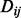
), chromosome number per pool (
s
) and treatment group. Different assumptions about the distribution of
which depends upon depth (
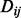
), chromosome number per pool (
s
) and treatment group. Different assumptions about the distribution of
 lead to different statistical tests. The binomial model used in Fisher’s exact test assumes
lead to different statistical tests. The binomial model used in Fisher’s exact test assumes
 is constant across pools within the same treatment group [see
Equation (2)
in the
Supplementary Material
], while the extra-binomial variation models used in this article assume
is constant across pools within the same treatment group [see
Equation (2)
in the
Supplementary Material
], while the extra-binomial variation models used in this article assume
 is a continuous variable that varies from pool to pool.
is a continuous variable that varies from pool to pool.
Note that allele frequencies estimated by sequencing pools of PCR-amplified DNA may be biased, as the PCR may preferentially amplify one allele compared to the other ( Sham et al. , 2002 ). This means that allele frequencies presented in Tables 1 and 2 may deviate from the true population frequency, which can be an issue when considering the sample size required to replicate findings for rare SNPs, in particular. As this bias is likely to affect cases and controls equally when there is no underlying difference in allele frequency, it cannot be expected to inflate Type 1 error, although it may act to amplify or depress any true difference between cases and controls depending on which allele is subject to bias.
Other methods allowing for the variance in pooled sequencing have been explored. Wang et al. (2010) estimated allele frequencies by weighting sequencing read counts using a weight inversely proportional to the variance of the allele frequency estimate and compared these weighted estimates between cases and controls. However, no published software is available to implement this approach. An alternative approach adopted by Kim et al. (2010) is to estimate allele frequency by maximum likelihood and then use a likelihood ratio test to test the MAF difference between cases and controls. However, this method is affected heavily by pool size. As the authors pointed out, their approach is not applicable to pools with more than five individuals per pool. Given the main purpose of pooled sequencing is to decrease the experimental cost, a large pool size may be expected in real experimental data.
Here, instead of specifying the statistical distribution of
 , we propose a ‘quasi-likelihood’ approach which only defines the mean and variance of
, we propose a ‘quasi-likelihood’ approach which only defines the mean and variance of
 . The two EB models in this article share the same mean functions of
. The two EB models in this article share the same mean functions of
 with different variance functions where Williams’ EB1 model adopted one parameter,
with different variance functions where Williams’ EB1 model adopted one parameter,
 , for each SNP
i
and our EB2 model adopted two universal parameters,
a
and
b
, for all SNPs.
, for each SNP
i
and our EB2 model adopted two universal parameters,
a
and
b
, for all SNPs.
The EB models have the advantage of including between-pool variation, compared to the standard binomial model which ignores
heterogeneity of pools and thus provides a poor fit of our sequencing data (
Fig. 3
). However, several shortcomings are exposed in EB1: (i) the significance test is based on increases in the
 statistic, not a statistically powerful approach (
McCullagh, 1983
); (ii) parameter estimation is complicated requiring iteratively re-weighted least squares (see Section C of the
Supplementary Material
) and (iii) the small sample size (only 20 data points for each SNP
i
) means
statistic, not a statistically powerful approach (
McCullagh, 1983
); (ii) parameter estimation is complicated requiring iteratively re-weighted least squares (see Section C of the
Supplementary Material
) and (iii) the small sample size (only 20 data points for each SNP
i
) means
 cannot be estimated precisely.
cannot be estimated precisely.
In EB2, we assumed that the parameters in the variance function are constant across all SNPs tested. By doing this, we expanded the number of data points for parameter estimation which allowed more efficient estimation and our use of GLM means it may be fitted in standard software. This could, of course, be extended to include other SNP-specific features by changing the form of Equation (8) , but no other features were found to be predictive of error structure in our 454 dataset.
The improvement of EB2 over EB1 is obvious in the Q–Q plot—the slope declines to 1.26 ( Fig. 4 versus Fig. 5 a). Given the fact that of the 10 re-sequenced genes, 6 were in known T1D regions, we expect some SNPs would be genuinely associated with T1D and therefore expect the slope to be greater than one.
The simulation results showed that across different situations, our preferred EB2 model has an overall excellent control of
Type 1 error rate. This is in contrast to Fisher’s exact test, where the observed Type 1 error rate may be as much as 9-fold
the nominal rate at
 .
.
In our 454 data, base error rates were very low. However, we included a wider range of errors in our simulations to allow us to examine the potential for our model to be applied to other technologies. Because our model only deals with increased variance, and not systematic bias induced by base calling errors, we undertake a separate error correction step which should correct the error in expectation, but may itself increase variance. This can be seen in the dependence of Type 1 error rate on the sequencing error for Fisher’s exact test, whereas our model appears to have a good control of Type 1 error rates across the range of sequencing errors considered, despite both methods being applied to the same, error-corrected, data. Note that any estimates of error rates are likely to be uncertain. Our experience is that the effect of correcting for a poorly estimated error rate in simulated data depends on MAF, the magnitude of the true error and how poorly it is estimated. In the case of our 454 data, we are lucky to be dealing with low estimated error rates which are consistent with previous estimates for this technology. Correction for these estimated error rates made no substantial difference to our conclusions. However, if the estimated error rates in other applications were larger, it might be wise to conduct some sensitivity analysis, varying the estimated error rate by factors of two or more, to examine whether associations identified are robust to misspecification of error rates.
A shortage of any model used here is the assumption of binomial error within each pool, which allows a zero count for major
alleles. This is in contrast to our SNP detection principle which requires at least two supporting reads at a position to
call a SNP (i.e. we should model
 for some
k
,
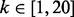
). When we removed our detection criteria and instead examined all SNPs in dbSNPs version 128 (
Sherry
et al.
, 2001
) within our 144 target regions, the Q–Q plot showed further improvement (
Fig. 5
b). Additionally, a much smaller maximum sample quantile was observed in dbSNP Q–Q plot, indicating there are still errors
among the full set of 473 called SNPs.
for some
k
,
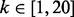
). When we removed our detection criteria and instead examined all SNPs in dbSNPs version 128 (
Sherry
et al.
, 2001
) within our 144 target regions, the Q–Q plot showed further improvement (
Fig. 5
b). Additionally, a much smaller maximum sample quantile was observed in dbSNP Q–Q plot, indicating there are still errors
among the full set of 473 called SNPs.
Overall, extra-binomial models appear to have better properties than the naive binomial model. They could analyse a larger range of variants with lower or more variant pool depths and our new EB2 model is more appropriate and easier to apply compared with the EB1 model proposed by Williams (1982) . Work such as this is used as the basis for further confirmatory experiments and we intend to follow up the four new SNPs identified in Table 2 . More accurate results lead to better targeting of these experiments and thus faster and more efficient progress to identify the causal genes in T1D. >>>>>>> 4770c2fa2cc3fbe020c130e94b4d1692ec8ad491
<<<<<<< HEAD
ACKNOWLEDGEMENTS
We wish to thank the anonymous reviewers for their pertinent and constructive remarks, which helped us to improve this manuscript. All the computations were performed at the Vital-IT Center for high-performance computing of the SIB Swiss Institute of Bioinformatics ( http://www.vital-it.ch ).
Funding : SIB receives financial supports from the Swiss Federal Government through the State Secretariat for Education and Research (SER). Swiss National Science Foundation ( 31003A-125145 ) and University of Lausanne to A.G.; Swiss National Science Foundation ( PMPDP3-129027 to H.N.-H.).
=======
The data used in this work were generated by Sergey Nejentsev. I would like to thank colleagues in the Juvenile Diabetes Research
Foundation/Wellcome Trust Diabetes and Inflammation Laboratory (DIL) for helpful comments on the work and earlier drafts.
Funding:
X.Y. was supported by Human Molecular Genetics Course in Imperial College London and the Juvenile Diabetes Research Foundation/Wellcome
Trust Diabetes and Inflammation Laboratory (DIL). The DIL is funded by the Juvenile Diabetes Research Foundation (9-2011-253),
the Wellcome Trust (091157/Z/10/Z) and the National Institute for Health Cambridge Biomedical Research Centre. The Cambridge
Institute for Medical Research is in receipt of a Wellcome Trust Strategic Award (079895). D.C. is supported by a Wellcome
Trust Principal Research Fellowship (091388/Z/10/Z) and C.W. is supported by a Wellcome Trust Research Career Development
Fellowship (089989/Z/09/Z).
>>>>>>> 4770c2fa2cc3fbe020c130e94b4d1692ec8ad491
Conflict of Interest
: none declared.
ACKNOWLEDGEMENTS
<<<<<<< HEAD
=======
=======
>>>>>>> 4770c2fa2cc3fbe020c130e94b4d1692ec8ad491
Footnotes
-
<<<<<<< HEAD
Associate Editor: Martin Bishop
=======
Associate Editor: Michael Brudno
>>>>>>> 4770c2fa2cc3fbe020c130e94b4d1692ec8ad491
Associate Editor: Martin Bishop =======
Associate Editor: Michael Brudno >>>>>>> 4770c2fa2cc3fbe020c130e94b4d1692ec8ad491
- <<<<<<< HEAD © The Author 2013. Published by Oxford University Press.
======= © The Author 2012. Published by Oxford University Press.
>>>>>>> 4770c2fa2cc3fbe020c130e94b4d1692ec8ad491 This is an Open Access article distributed under the terms of the Creative Commons Attribution License (http://creativecommons.org/licenses/by/3.0/), which permits unrestricted reuse, distribution, and reproduction in any medium, provided the original work is properly cited.
Previous Section
<<<<<<< HEAD
======= �
>>>>>>> 4770c2fa2cc3fbe020c130e94b4d1692ec8ad491 REFERENCES
-
<<<<<<< HEAD
↵
======= ↵>>>>>>> 4770c2fa2cc3fbe020c130e94b4d1692ec8ad491
- <<<<<<< HEAD Bellemain E ,
- et al
<<<<<<< HEAD CrossRef Medline ======= Abstract / FREE Full Text >>>>>>> 4770c2fa2cc3fbe020c130e94b4d1692ec8ad491- <<<<<<< HEAD ↵
======= ↵>>>>>>> 4770c2fa2cc3fbe020c130e94b4d1692ec8ad491- <<<<<<< HEAD Bonder MJ ======= Barrett JC >>>>>>> 4770c2fa2cc3fbe020c130e94b4d1692ec8ad491 ,
- et al
<<<<<<< HEAD Abstract / FREE Full Text ======= CrossRef Medline Web of Science >>>>>>> 4770c2fa2cc3fbe020c130e94b4d1692ec8ad491- <<<<<<< HEAD ↵
======= ↵>>>>>>> 4770c2fa2cc3fbe020c130e94b4d1692ec8ad491- <<<<<<< HEAD Borg I ======= Cooper JD >>>>>>> 4770c2fa2cc3fbe020c130e94b4d1692ec8ad491 ,
- <<<<<<< HEAD Groenen PJF
- <<<<<<< HEAD ↵
======= ↵>>>>>>> 4770c2fa2cc3fbe020c130e94b4d1692ec8ad491- <<<<<<< HEAD Cai Y ,
- Sun Y ======= Crowder MJ >>>>>>> 4770c2fa2cc3fbe020c130e94b4d1692ec8ad491
<<<<<<< HEAD Abstract / FREE Full Text ======= Search Google Scholar- ↵
- Hunt DL ,
- et al
- <<<<<<< HEAD ↵
======= ↵>>>>>>> 4770c2fa2cc3fbe020c130e94b4d1692ec8ad491- <<<<<<< HEAD Dubuis A ======= Huse SM >>>>>>> 4770c2fa2cc3fbe020c130e94b4d1692ec8ad491 ,
- et al
- <<<<<<< HEAD ↵
======= ↵>>>>>>> 4770c2fa2cc3fbe020c130e94b4d1692ec8ad491- <<<<<<< HEAD Edgar RC
- et al
. Design of association studies with pooled or un-pooled next-generation sequencing data . Genet. Epidemiol. >>>>>>> 4770c2fa2cc3fbe020c130e94b4d1692ec8ad491 2010 ; <<<<<<< HEAD 26 : 2460 - 2461 ======= 34 : 479 - 491 >>>>>>> 4770c2fa2cc3fbe020c130e94b4d1692ec8ad491 .<<<<<<< HEAD Abstract / FREE Full Text ======= CrossRef Medline >>>>>>> 4770c2fa2cc3fbe020c130e94b4d1692ec8ad491- <<<<<<< HEAD ↵
======= ↵>>>>>>> 4770c2fa2cc3fbe020c130e94b4d1692ec8ad491- <<<<<<< HEAD Edgar RC ======= Koboldt DC >>>>>>> 4770c2fa2cc3fbe020c130e94b4d1692ec8ad491 ,
- et al
- <<<<<<< HEAD ↵
======= ↵>>>>>>> 4770c2fa2cc3fbe020c130e94b4d1692ec8ad491- <<<<<<< HEAD Hubert L ======= Li H >>>>>>> 4770c2fa2cc3fbe020c130e94b4d1692ec8ad491 ,
- <<<<<<< HEAD Arabie P ======= Durbin R >>>>>>> 4770c2fa2cc3fbe020c130e94b4d1692ec8ad491
<<<<<<< HEAD CrossRef Web of Science ======= Abstract / FREE Full Text >>>>>>> 4770c2fa2cc3fbe020c130e94b4d1692ec8ad491- <<<<<<< HEAD ↵
======= ↵>>>>>>> 4770c2fa2cc3fbe020c130e94b4d1692ec8ad491- <<<<<<< HEAD Huse SM ======= Li H >>>>>>> 4770c2fa2cc3fbe020c130e94b4d1692ec8ad491 ,
- et al
<<<<<<< HEAD CrossRef Medline ======= Abstract / FREE Full Text >>>>>>> 4770c2fa2cc3fbe020c130e94b4d1692ec8ad491- <<<<<<< HEAD ↵
======= ↵>>>>>>> 4770c2fa2cc3fbe020c130e94b4d1692ec8ad491- <<<<<<< HEAD Katoh K ======= Marioni JC >>>>>>> 4770c2fa2cc3fbe020c130e94b4d1692ec8ad491 ,
- <<<<<<< HEAD Standley DM
- <<<<<<< HEAD ↵
======= ↵>>>>>>> 4770c2fa2cc3fbe020c130e94b4d1692ec8ad491- <<<<<<< HEAD Luthy R ,
- Xenarios I ,
- Bucher ======= McCullagh >>>>>>> 4770c2fa2cc3fbe020c130e94b4d1692ec8ad491 P
- <<<<<<< HEAD ↵
======= ↵>>>>>>> 4770c2fa2cc3fbe020c130e94b4d1692ec8ad491- <<<<<<< HEAD Niu B ======= Nejentsev S >>>>>>> 4770c2fa2cc3fbe020c130e94b4d1692ec8ad491 ,
- et al
<<<<<<< HEAD CrossRef Medline ======= Abstract / FREE Full Text >>>>>>> 4770c2fa2cc3fbe020c130e94b4d1692ec8ad491- <<<<<<< HEAD ↵
- Pagni M ,
- Jongeneel CV
R Development Core Team . R: A Language and Environment for Statistical Computing. R Foundation for Statistical Computing . Austria : Vienna ; 2010 >>>>>>> 4770c2fa2cc3fbe020c130e94b4d1692ec8ad491 .<<<<<<< HEAD CrossRef ======= >>>>>>> 4770c2fa2cc3fbe020c130e94b4d1692ec8ad491- <<<<<<< HEAD ↵
======= ↵>>>>>>> 4770c2fa2cc3fbe020c130e94b4d1692ec8ad491- <<<<<<< HEAD Quince C ======= Rivas MA >>>>>>> 4770c2fa2cc3fbe020c130e94b4d1692ec8ad491 ,
- et al
<<<<<<< HEAD CrossRef Medline Web of Science ======= CrossRef Medline >>>>>>> 4770c2fa2cc3fbe020c130e94b4d1692ec8ad491- <<<<<<< HEAD ↵
======= ↵>>>>>>> 4770c2fa2cc3fbe020c130e94b4d1692ec8ad491- <<<<<<< HEAD Rice P ======= Robinson MD >>>>>>> 4770c2fa2cc3fbe020c130e94b4d1692ec8ad491 ,
- <<<<<<< HEAD Longden I ,
- Bleasby A
- ↵
- Sarin S ,
- et al
- <<<<<<< HEAD ↵
======= ↵>>>>>>> 4770c2fa2cc3fbe020c130e94b4d1692ec8ad491- <<<<<<< HEAD Sigrist CJ ======= Sham P >>>>>>> 4770c2fa2cc3fbe020c130e94b4d1692ec8ad491 ,
- et al
<<<<<<< HEAD CrossRef ======= CrossRef Medline Web of Science >>>>>>> 4770c2fa2cc3fbe020c130e94b4d1692ec8ad491- <<<<<<< HEAD ↵
======= ↵>>>>>>> 4770c2fa2cc3fbe020c130e94b4d1692ec8ad491- <<<<<<< HEAD Sun Y ======= Sherry ST >>>>>>> 4770c2fa2cc3fbe020c130e94b4d1692ec8ad491 ,
- et al
<<<<<<< HEAD CrossRefThis Article
- This article is Open Access OA
- Abstract
- » Full Text (HTML)
- Full Text (PDF)
Classifications
-
- Original Paper
Services
Responses
- Submit a response
- No responses published
Citing Articles
Google Scholar
PubMed
Related Content
Share
- Email this article
-
-
 CiteULike
CiteULike
-
 Delicious
Delicious
-
 Facebook
Facebook
-
 Google+
Google+
-
 Mendeley
Mendeley
-
 Twitter
Twitter
-
People also read [Beta]
The Journal
- About this journal
- Calendar of events
- Rights & Permissions
- Dispatch date of the next issue
- This journal is a member of the Committee on Publication Ethics (COPE)
- Recent Comments
- We are mobile – find out more
An official journal of
Impact factor: 5.468
Alerting Services
Corporate Services
Widget
Most
-
Most Read
- An approximate Bayesian approach for mapping paired-end DNA reads to a reference genome
- The variant call format and VCFtools
- STAR: ultrafast universal RNA-seq aligner
- QUAST: quality assessment tool for genome assemblies
- Robust data-driven incorporation of prior knowledge into the inference of dynamic regulatory networks
-
Most Cited
- The variant call format and VCFtools
- UCHIME improves sensitivity and speed of chimera detection
- MEME-ChIP: motif analysis of large DNA datasets
- Identification of novel transcripts in annotated genomes using RNA-Seq
- Bismark: a flexible aligner and methylation caller for Bisulfite-Seq applications